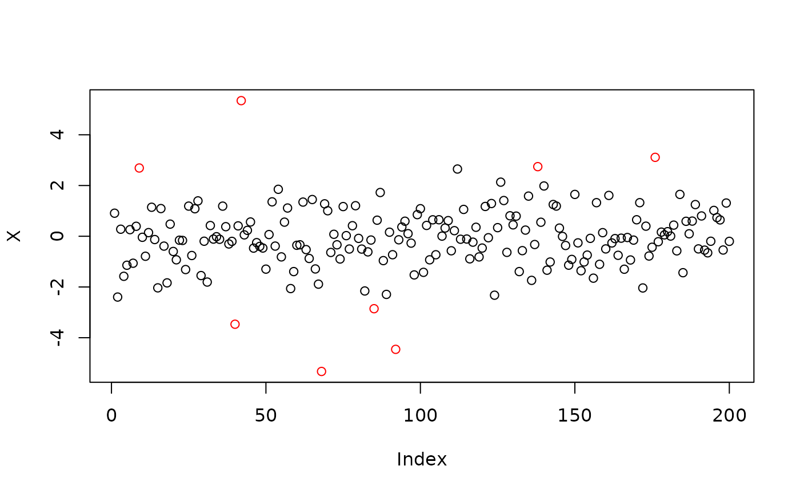

This function aims at finding outliers in a vector using the interquartile range rule
Arguments
- x
A vector in which outliers need to be found
Value
A boolean vector, TRUE for outliers, FALSE when not
Examples
# generate data from gaussian and exponential distribution
X <- sample(c(rnorm(100), c(rexp(50), -rexp(50))))
# plot data
plot(X, col = ifelse(is_outlier(X), "red", "black"))
